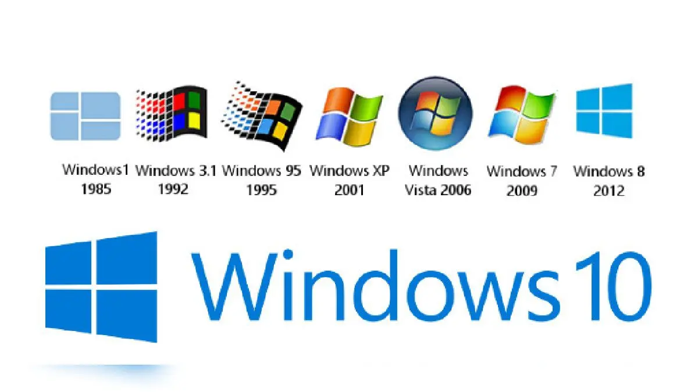

La Historia de Microsoft
Publicado el 26/05/2025
Ignacio Confalonieri
Microsoft fue fundada en 1975 por Bill Gates y Paul Allen, con la misión de llevar software a las computadoras personales. Su primer gran éxito fue un intérprete de BASIC para el Altair 8800, pero su revolución llegaría con el sistema operativo MS-DOS, adoptado por IBM en sus PCs.
En 1985, Microsoft lanzó Windows, una interfaz gráfica sobre MS-DOS que con los años se convertiría en el sistema operativo más utilizado del mundo. A partir de allí, la empresa diversificó sus productos: Microsoft Office, navegadores, consolas Xbox y servicios en la nube.
Durante los años 90, Microsoft alcanzó el dominio casi total del mercado de sistemas operativos. Esto llamó la atención de gobiernos y competidores, lo que derivó en uno de los juicios más importantes en la historia de la tecnología.
En 1998, el Departamento de Justicia de EE.UU. demandó a Microsoft por prácticas monopólicas, especialmente por incluir Internet Explorer con Windows, lo que perjudicaba a otros navegadores como Netscape. El juicio terminó en el año 2001 con un acuerdo que obligaba a la empresa a permitir mayor interoperabilidad y transparencia.
A pesar de esto, Microsoft siguió innovando y adaptándose. En los 2000 lanzó Xbox, desarrolló software empresarial y apostó fuerte por el entorno cloud con Azure. En la década de 2010 y 2020, bajo el liderazgo de Satya Nadella, se transformó en una compañía más abierta y colaborativa, integrando Linux, GitHub y desarrollos de IA.

Microsoft pasó de ser una empresa enfocada en software cerrado a convertirse en una de las principales impulsoras del código abierto y la computación en la nube. Su historia está marcada por la innovación, la controversia y la constante adaptación al mercado.